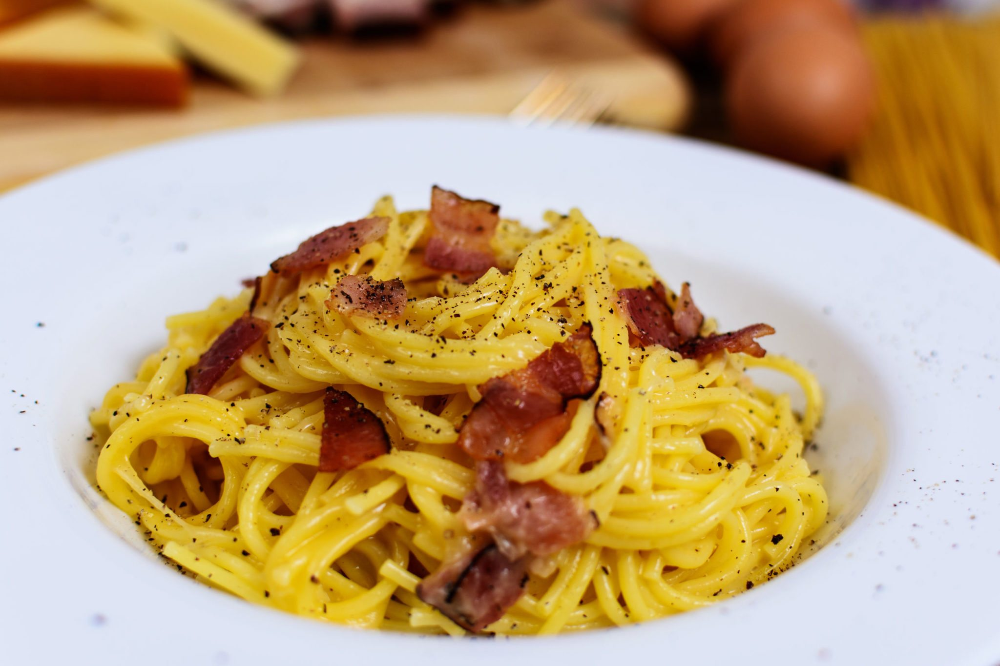

Carbonara

Carbonara is made with guanciale (cured pork), eggs, Pecorino Romano cheese, spaghetti pasta, and lots of black pepper. Italians don't add extra ingredients like cream, milk, garlic, or onions.
Try this recipe if you want to make an authentic, creamy carbonara that comes straight from Italy, where I live.
Buon appetito!
Ingredients
- Guanciale (cured pork cheek)
- Spaghetti
- Eggs
- Pecorino Romano cheese
- Salt and pepper
Steps
- Cook the pork until browned and crispy, then drain on paper towels.
- Boil the spaghetti in salted water. Drain and return to the pot.
- Whisk the eggs, 1/2 of the cheese, a bit of gaunciale's melted fat and some pepper in a bowl until smooth.
- Pour the egg mixture over the pasta, stirring quickly, until creamy.
- Stir in the pork, then top with the remaining cheese and more black pepper.